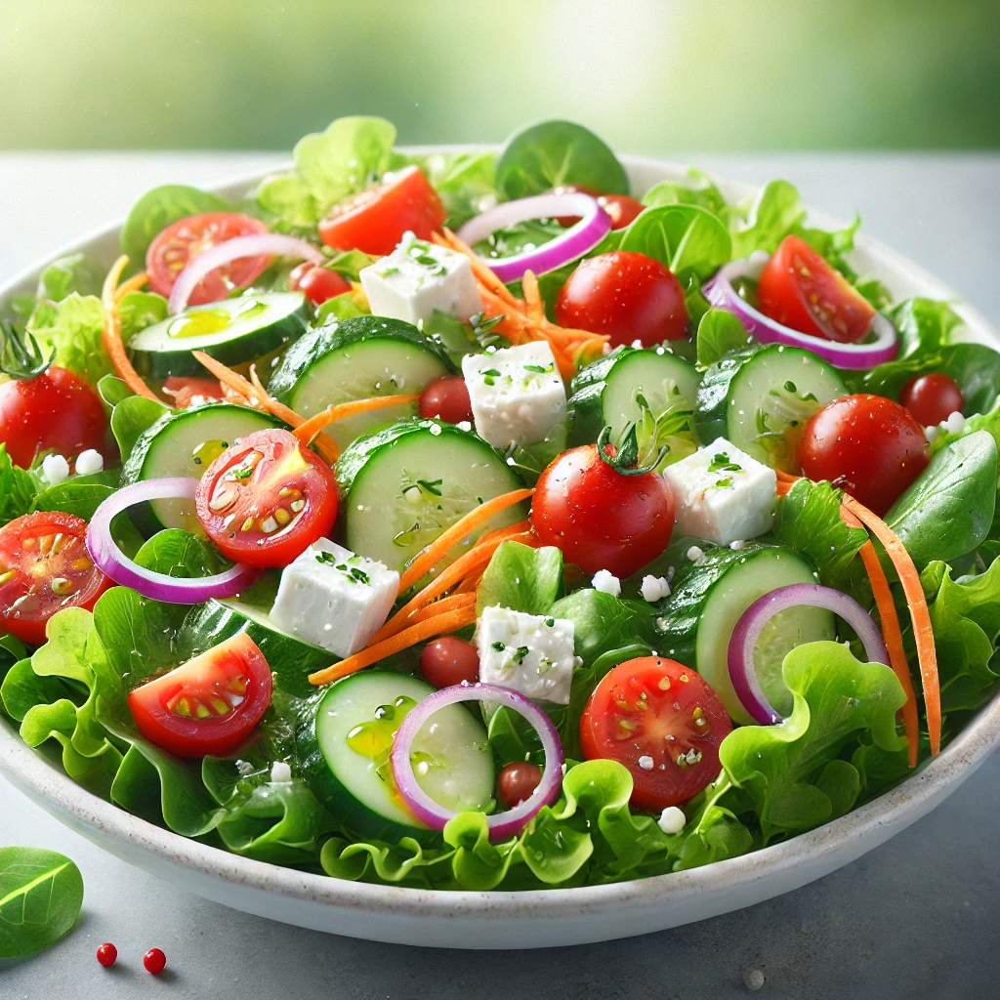

🥗 Salad

Description
A refreshing, healthy salad with crisp vegetables, a tangy dressing, and vibrant colors.
Ingredients
2 cups mixed greens (lettuce, spinach, arugula)
1/2 cup cherry tomatoes, halved
1/4 cup sliced cucumbers
1/4 cup shredded carrots
1/4 cup sliced red onions
1/4 cup feta cheese (optional)
2 tablespoons olive oil
1 tablespoon balsamic vinegar
Salt and pepper to taste
Steps
Wash and chop all the vegetables.
In a large bowl, combine the greens, tomatoes, cucumbers, carrots, and onions.
Drizzle with olive oil and balsamic vinegar.
Season with salt and pepper to taste.
Toss everything gently to mix well.
Top with feta cheese if desired.
Serve fresh and enjoy!
🏠 Home